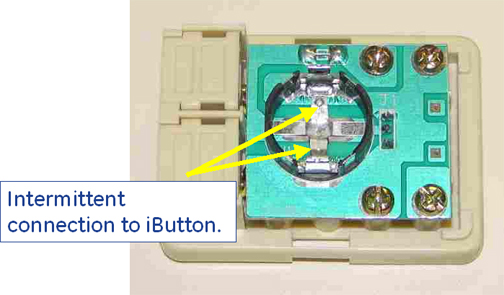

Illustration 14: iButton and Holder

Illustration 13: Intermittent Connection

Illustration 14: iButton and Holder
| NOTE: | If disconnecting the iButton cable from the 1-Wire Hub results in detection of the opposite iButton, this suggests that the disconnected iButton or holder was shorting out the hub bus. Removing the failing iButton from its holder and slightly bending the holder contacts away from the traces underneath may restore functionality. Applying insulating tape as shown in Illustration 14 may also help. Otherwise, replace the holder. |